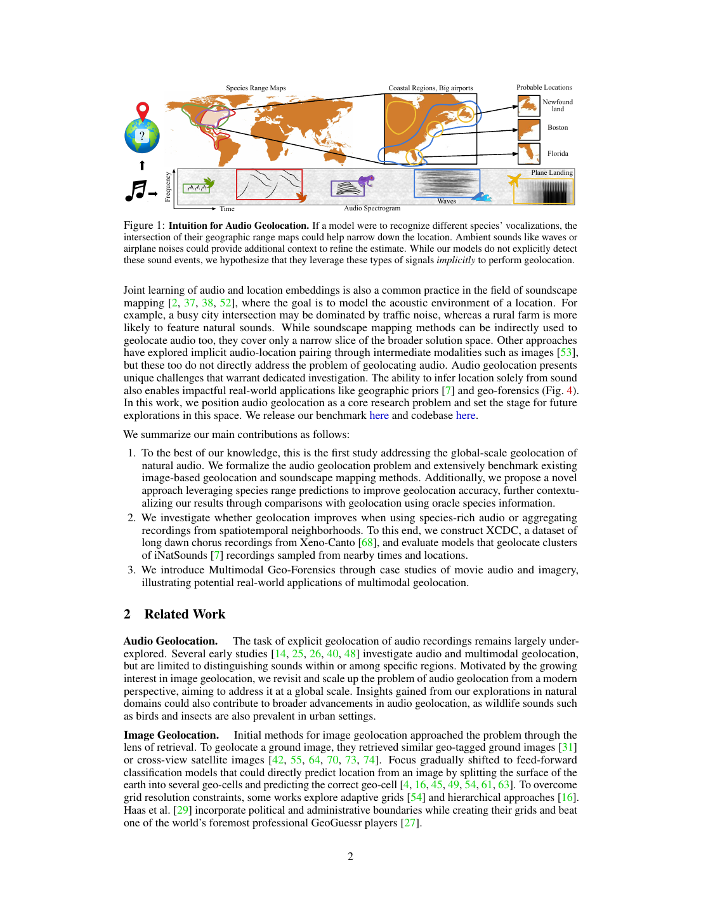
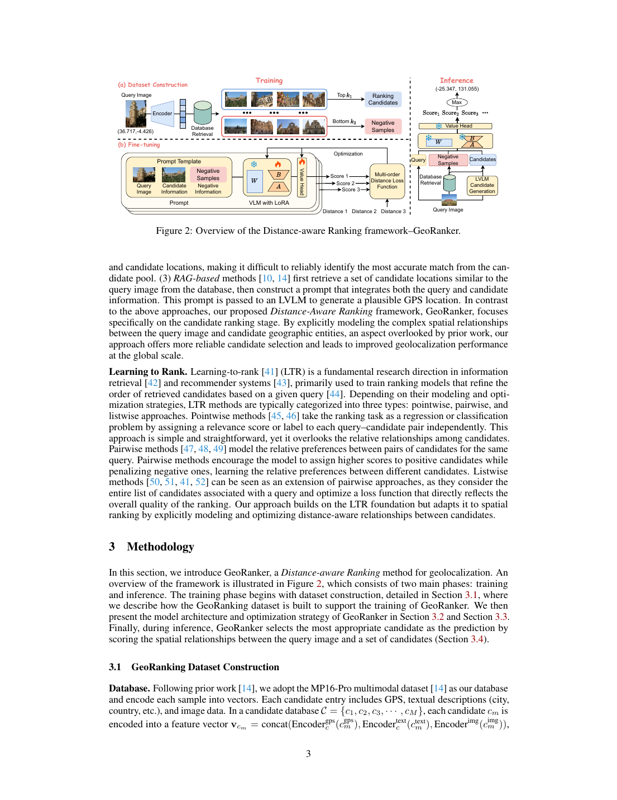
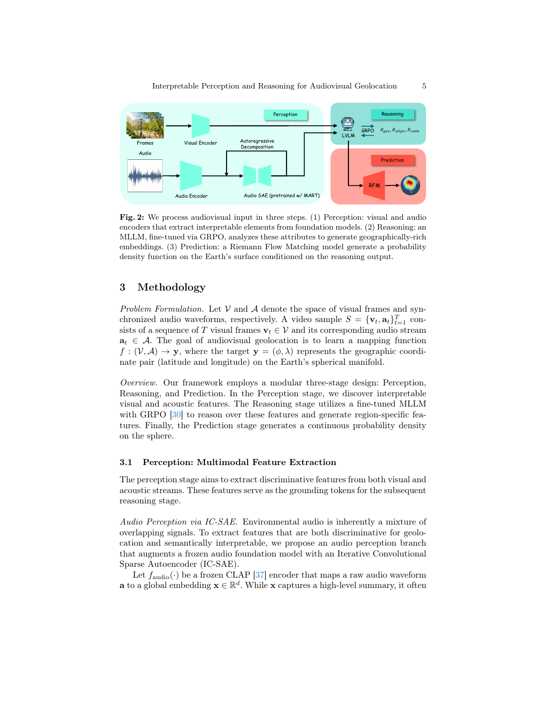

将查询图像与带坐标图库匹配，返回最近邻位置；直观但受图库覆盖限制。
Im2GPS · Hays & Efros, 2008 ↗RESEARCH NOTEBOOK · 2026
让每一次实验，
都留下可验证的证据。
视觉、遥感影像与环境音频联合地理定位的受控诊断日志。记录假设、协议、结果、失败与下一步。
00 · MOTIVATION
地理定位并不是一种单一任务
视觉退化地理定位通常沿像素恢复路线重建图像，但恢复外观不等于恢复任务相关的地理证据。我们的受控实验表明：在严重模糊与28px降采样的8个“退化×尺度”组合中，退化视觉加配对音频按NLL有7个优于FoundIR恢复视觉，按准确率有5个优于恢复视觉。因此研究问题从一般多模态融合收敛为：如何在未知视觉退化下，不依赖像素重建，而在定位任务空间自适应利用音频补偿丢失的地理证据？
将地球划成离散单元并预测类别；全球可扩展，但存在边界、类中心和未见单元问题。
PlaNet · Weyand et al., 2016 ↗学习图像与GPS编码的共享空间，把位置建模成连续或密集候选检索问题。
GeoCLIP · Cepeda et al., 2023 ↗匹配地面街景与卫星/航拍图库，核心困难是视角、尺度和几何差异。
Sample4Geo · Deuser et al., 2023 ↗先粗检索候选，再学习距离感知排序；把“选对”扩展为“按接近程度排序”。
GeoRanker · 本地论文第3页 ↗声音可携带物种、语言、交通和声景线索；关键问题是它是否在视觉条件下仍有新增信息。
Audio Geolocation · 本地论文第2页 ↗


01 · RESEARCH LOGIC
每个实验都由上一轮结果触发
这不是预先写好的六步方案，而是一条逐轮排除解释的决策链。每个箭头都回答：上一轮哪里不可信，为什么下一轮能提供更强证据，以及我们据此改变了什么。
先确认冻结三模态特征能否跑通定位
观察：H3-2准确率32.65%，中位误差579.9 km；尺度变细时误差没有合理下降。
竞争解释：可能是任务本身困难，也可能是输入处理明显不合理——卫星模型编码街景、全景直接缩放、每地点只取一个音频。
为什么做下一步？ 如果表征方式本身有系统性缺陷，就不能用这一结果判断模态是否有用；必须先修正已知的不公平输入处理。
改用街景ViT-L、四透视视角和多音频片段
观察：共同尺度H3-2从32.65%升至51.55%，H3-3从24.80%升至35.20%；说明旧管线确实低估了可读信息。
新问题：完整模型测试时置零显示音频贡献很弱，但置零会制造训练时没见过的输入分布，不能等价于模态固有贡献。
为什么做下一步？ 要区分“音频没有信息”和“完整模型没有学会依赖音频”，需要让每种模态组合在相同预算下独立训练。
分别训练S、R、A、SR、SA、RA和SRA
观察：街景在粗尺度强，遥感在H3-3反超街景；音频单模态高于随机，但加入视觉后的边际增益小且不稳定。
得到两条解释：一是普通分类忽略“错在附近”和“错到另一大陆”的差别；二是音频可能只修正视觉不确定性，而不适合独立完成全尺度分类。
为什么分成两条后续实验？ 先改地理目标，检验定位头是否限制所有模态；再用干预实验单独判断模型是否使用了地点对应的音频。
加入地理距离软标签与粗细尺度一致性
观察：街景+遥感在H3-3由33.10%升至35.92%，负对数似然和地理误差也改善。
决策：保留地理与层级约束；最终方法不能只是四个互不相关的分类头。
失败分支：强迫音频独立预测全部尺度后四个尺度都退化，因此否定“对音频施加更强全尺度分类监督就会更好”。
为什么还不能说音频没用？ 辅助任务失败可能是监督角色错误。需要保持模型不变，只破坏音频与地点的对应关系，观察性能是否真的改变。
测试时随机交换音频100次
观察：真实配对在所有尺度的负对数似然都优于随机音频；H3-3准确率高4.13个百分点，中位误差少约59.1 km。
决策：拒绝“模型完全忽略音频”这一解释。音频—地点对应关系确实进入了模型决策。
仍未解决：正确音频优于错误音频，不等于三模态稳定优于纯视觉；它可能只对一部分样本有效。
为什么做下一步？ 如果音频的价值是消除视觉歧义，那么增益应集中在纯视觉模型不确定的样本，而不是平均分布在所有样本。
分析纯视觉预测熵最高的25%测试样本
观察：H3-1至H3-3的准确率和真实位置概率改善，但H3-0下降，部分地理距离指标仍恶化。
当前结论：音频不是固定正贡献，而是具有尺度和样本异质性；静态融合缺少“何时相信音频”的机制。
为什么做下一步？ 高熵分层仍是测试集事后选择，而且只在H3分类任务中观察。需要换成回归和检索，判断结论是否依赖分类头；也需要真正构造错误候选，而不只是挑选困难查询。
在分类、球面回归和坐标检索中重做七组合
观察：Haversine回归优于经纬度欧氏回归；三模态检索相对街景+遥感把中位误差从388.8 km降至320.7 km、200 km命中率提高4.0个百分点，但2500 km命中率下降。
决策：音频的条件增益不是H3分类独有现象，但仍不是全尺度稳定正贡献。后续使用更符合实际的跨视角候选排序作为主要诊断任务。
为什么做下一步？ 训练坐标库检索只给总体结果，仍不能回答音频具体帮助哪种错误候选。需要把负候选按真实距离和视觉相似度显式控制。
构造正遥感图与错误遥感图的受控候选对
实现：街景/视听作为查询，328张测试遥感图作为候选库；负候选先按Haversine距离分五箱，再按纯视觉负候选分数分为easy、medium、hard。
观察：三个随机种子中，视听模型在25 km以上的hard候选稳定改善；200–750 km平均增益最大，而0–25 km不稳定。正确音频又稳定优于置换音频。
边界：这只能说明音频可以调整部分候选顺序，不能推出每个模态天然对应一个固定地理尺度。
为什么做下一步？ 候选距离上的增益可能来自模态固有空间相关结构，也可能只是模型和样本分布。先脱离定位头，直接测冻结表示随地理距离如何变化。
测量三模态相似度—距离曲线与变差函数
实现：计算约900万地点对，使用八个距离箱、500次地点级自助重采样和30次坐标置换；拟合指数变差函数得到描述性相关长度。
观察：遥感在局部下降最快，街景保留长程区域结构；平均音频主要在0–25 km下降，25 km后距离辨识接近随机。结果没有支持简单的“街景细、遥感中、音频粗”模式。
关键反思：这里测量的是已把时间片平均后的音频向量。若地理线索来自短暂语言、物种或文化事件，均值会先把研究对象抹去，因此该实验不能检验稀疏事件假设。
为什么做下一步？ 需要回到原始音频，保留每个时间片，并让均值、单事件、前二事件和软注意力在同一跨视角任务中公平比较。
重新提取12952个未平均事件并做三随机种子检索
实现：每文件读取前10秒，48 kHz单声道，3秒非重叠窗口；每片段独立用CLAP编码。查询是街景+事件包，328张遥感图是候选库，对称InfoNCE训练。
观察：单事件和前二事件都优于均值，前二事件把中位误差从914 km降至753 km；正确事件包稳定优于30次置换。但所有视听方案仍低于纯视觉。
失败发现：删除最高注意力片段并不比随机删除更有害，所以普通注意力权重不能被解释为关键地理事件。
为什么重做而不是继续检索？ 前10秒和遥感候选库同时限制了结论。需要覆盖完整录音，并返回直接的地理分类/坐标评价。
审计149.9小时录音并提取106336个CLAP窗口
观察：地点录音中位72.4秒、最长4.33小时；CLAP原生上限仅10秒，旧前10秒方案确实严重漏采。
结果：首窗、全局均值、随机、时序突变和多样性聚合仍未让正常Street+Audio稳定超过Street-only。
排除了什么？ 正常视觉下弱增益不能再主要归因于旧实验只读前10秒；下一步必须允许模型主动拒绝音频。
验证集允许音频权重降为零
观察：正常街景的最优音频权重在r0/r1约0.03，r2接近0，r3为0；NLL只有微弱粗尺度校正，准确率基本不变。
决策：否定“正常视觉下不同尺度普遍依赖音频”；不能把强制拼接的负迁移误解为数据完全无信息。
为什么控制来源？ 正确音频优于随机音频也可能来自Freesound、iNaturalist和SoundingEarth的地理采样偏差。
在同一来源内匹配最接近的录音窗口数再错配
观察：100%测试音频被替换后，正确音频在五种表示、四尺度和三个种子上仍有更低NLL；均值表示优势为0.076–0.175。
决策：来源偏差会夸大全局置换效应，但不能解释全部样本对应信息。音频含地理结构，却未必能改善强视觉。
为什么再做事件MIL？ 完整时间轴聚合仍可能抹去短暂事件，需要让事件选择只依赖音频，并直接做定位。
不看视觉地学习完整时间轴事件权重
观察：注意力对联合模型r2/r3 NLL只有0.01量级改善；删除最高事件平均比随机删除更有害，但种子44全部反向；只保留最高事件明显恶化。
决策：当前证据不支持单一特殊事件稳定主导定位，更像多个声景窗口的分布式弱证据。
最后还剩哪个可证伪解释？ 音频可能不是平均无用，而是在视觉空间信息真正缺失时才有价值；必须预先操纵视觉而非事后挑高熵样本。
三类三级退化、重新编码、验证集选择音频权重
观察：Blur 10使音频权重升至0.52–0.61，四尺度NLL改善0.22–0.31、准确率提高2.4–8.2个百分点；28px降采样也稳定改善。正确音频显著优于同来源、相近长度错误音频。
边界：变暗没有同样趋势；不是任何退化或任意新模态都会有效，关键是视觉空间结构丢失。
当前确定结论：不支持“正常视觉普遍加音频”与“单一特殊事件主导”；支持“视觉空间信息缺失时，正确音频提供条件性地理证据”。后续方法应学习输入可见的可靠性，而不是接收真实尺度或强制融合。
退化视觉+音频，是否比FoundIR恢复视觉更有效？
实现：使用ICCV 2025 FoundIR官方generalist权重，在相同3000地点、四视角、DINOv3-L、空间划分和三个随机种子下比较退化V、退化V+A与FoundIR-V。
观察：按NLL，音频补偿在8个“退化×尺度”组合中的7个优于FoundIR（87.5%）；按准确率在5个优于FoundIR（62.5%）。Blur-10的r0、r2、r3上两项指标均由音频补偿胜出。
当前motivation：通用恢复试图在像素空间重建输入，音频补偿则直接增加独立的场景证据。当前结果支持后者在多数强退化条件下带来更大的概率定位增益。
下一步：不把FoundIR放进最终方法，而把它保留为竞争路线；构建不接收退化标签的共享模型，学习视觉可靠性与配对音频贡献，并扩展到真实退化和任务驱动恢复基线。
退化训练和干净教师蒸馏后，音频证据还存在吗？
实现：六级像素退化统一训练；解冻DINOv3-L最后一层和final norm；分别使用地理监督与Clean→Degraded蒸馏；3000地点、三个随机种子。
观察：相对两种视觉补救中的较优者，音频在24个组合中13个NLL更低、8个准确率更高。Blur-10最稳定：4/4尺度NLL更低，3/4尺度准确率提高；正确音频对严格错配音频24/24组合NLL更低。
边界：28px主要由视觉鲁棒训练领先，不能把所有退化合并为音频有效。当前证据支持“严重模糊中的条件性音频证据”，不支持“音频普遍优于视觉补救”。
进入架构阶段：设计不接收真实退化标签或真实尺度的可靠性条件化证据融合；真实模糊与同骨干公平融合将作为架构验证，而不是继续延长motivation筛选。
Decision rule · 我们怎样推进
结果改善 不自动等于假设成立：必须检查数据划分、比较公平性和替代解释。
结果退化 不自动等于模态无信息：先区分数据无信息、编码器未提取、目标不匹配和融合失败。
下一实验 应尽量只破坏或改变一个因素，并能在两个竞争解释之间给出不同预期结果。
没有找到匹配的实验记录。